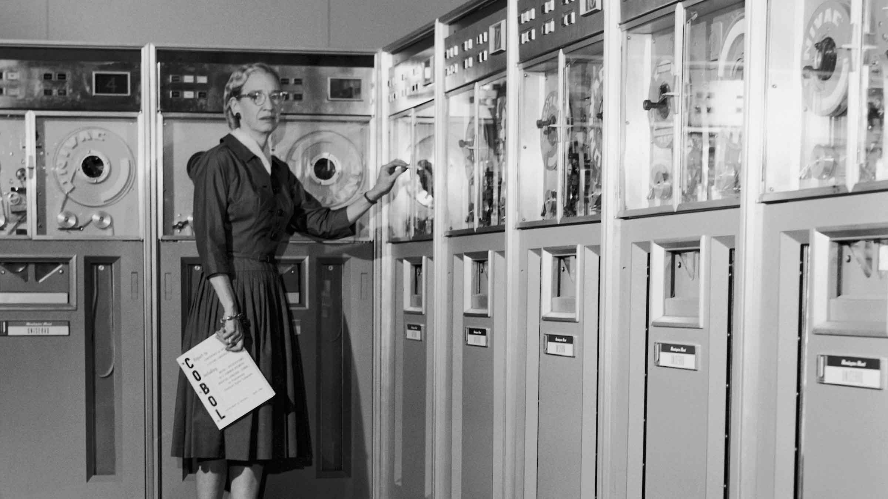

Grace Hopper
Amazing Grace

1906 - 1992 (Source: Fnac(E-pub))
Qui est Grace ?
Grace Brewster Murray est née le 9 Décembre 1906 à New York, elle étudie les mathématiques, la physique ainsi que l'économie au Vassar College et en sort diplomé en 1928, et en 1934, elle obtient un doctorat en mathématique à l'université de Yale.
La jeune femme enseigne les mathématique au Vassar College durant sa jeunesse entre 1931 et 1944, elle épousera en 1930 Vincent Hopper, un professeur de littérature, le couple n'aura aucun enfant et divorcera en 1945.
En 1943, Grace Hopper est enrôlée dans l'US Navy. L'année suivante, elle est promue au grade de lieutenant et affectée au projet du bureau d'informatique de l'université de Harvard. Elle utilise l'ordinateur Harvard Mark I dans l'équipe d'Howard Aiken. Elle fait partie du premier groupe, composé de trois personnes, et apprend la programmation.
Après la Seconde Guerre mondiale, elle a quitté le service actif dans la Marine, mais a continué à développer les ordinateurs Harvard Mark II et Harvard Mark III pour le Harvard Computing Laboratory1.
En 1949, Grace Hopper a été employée par Eckert-Mauchly Computer Company (EMCC) et a rejoint l'équipe qui a développé UNIVAC I à Philadelphie. En 1950, la société est rachetée par Remington Rand. L'année suivante, Hopper a conçu le premier compilateur pour UNIVAC I, nommé A-0 System1. En 1955, elle invente le langage FLOW-MATIC pour UNIVAC I, également connu sous le nom de B-0 (Business Language Version 0).
Elle travaille chez IBM depuis 1957, où elle a défendu l'idée que les programmes devraient pouvoir être écrits dans un langage proche de l'anglais plutôt que d'imiter le langage machine (comme l'assembleur). Sur la base de cette idée, le langage Cobol est né en 1959.
En 1966, selon la réglementation en vigueur, il dut quitter la Marine à l'âge de 60 ans et fut rappelé l'année suivante3. Dans les années 1970, elle a dirigé les travaux d'établissement des normes informatiques, notamment les premiers langages de programmation de haut niveau : Fortran et Cobol.
Grace Hopper sur le clavier UNIVAC, vers 1960.
Grace Hopper a servi dans la Marine jusqu'à sa retraite en 1986 en tant que général de division (moitié inférieure). Elle était à l'époque l'officier le plus âgé de la marine américaine.
Avant sa mort en 1992, elle a été embauchée par Digital Equipment en tant que consultante externe pour participer à une conférence sur les origines de l'informatique3. elle a été enterrée au cimetière national d'Arlington avec les honneurs militiares.
Comment à t'elle marqué l'histoire ?
Elle a participé au développement des premiers ordinateur Harvard Mark I II et III, elle a obtenue le grade d'officier de la Marine et jusqu'a ces 60 ans ce qui a fait d'elle la plus vielle officier de la Marine à ce moment là.
Elle a contribué au développement des deux premier languages de programmation avancé COBOL et Fortran, elle a inventé le language FLOW-MATIC, conçu le premier compilateur nommé 'A-0 System'.
Les différentes choses qu'elle à réaliser au cours de sa vie.
La Conception de trois language FLOW-MATIC, COBOL et FORTRAN
La création du premier compilateur pour UNIVAC ainsi qu'avec la Navi pour donner naissance au Harvard Mark I II et III.
Une oeuvre littéraire à était écrite à son sujet: Kurt W. Beyer, Grace Hopper and the Invention of the Information Age
Plus d'Info ?
Pour plus d'information sur Grace Hopper nous vous invitons à consulter ce lien Wikipédia